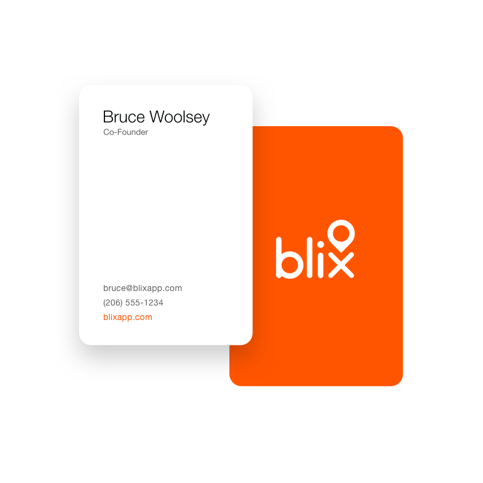

Blix
Blix is an iPhone App to help you keep track of places you've been, places you want to go, and places you don't want just anybody to know about.
I worked with the team to design the iPhone App. Later, I designed a logo, a brochure website, and several prototypes for a future desktop version of the app.


iPhone App
Save, Search & Tag
Plan for your next trip, or keep track of recommendations from friends. Share a list you've made with everybody, or just a few close friends.
Time for Some Prototypes
Looking to larger screens
While the initial design work for the iPhone app was wrapping up, we started thinking about how Blix might later scale up to bigger screens, and I built an html prototype to help visualize this exploration.


Next Project
Blue Nile UX & UI Design for iPhone